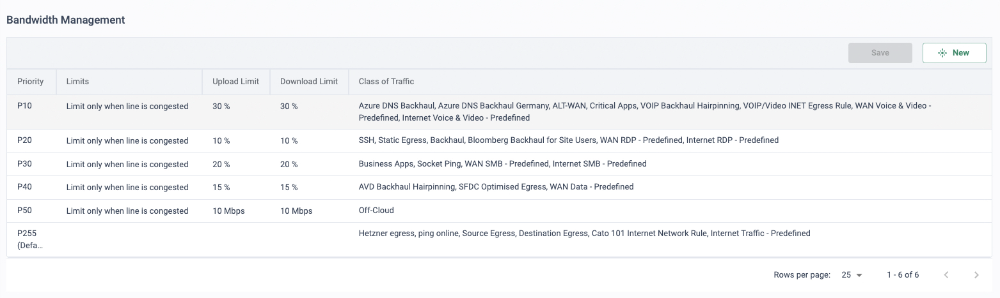

Why this matters
The objective is agility: moving from MPLS/VPLS — or from no connectivity at all — to an elegant future network design that treats legacy sites and cloud as one network. That means bringing off-net sites on-net quickly, deploying with ease and at scale, and decreasing operational time to value.
The classic triggers are M&A integration and initial deployment: deploy x sites using the Cato API or Terraform, integrate with Entra ID for user provisioning and identity awareness, then use those usernames directly inside network and QoS policy. One converged approach unifies and simplifies the target operational model — connectivity, optimisation and policy in a single platform instead of a stack of point products per site.
What legacy WANs make hard
Every option short of SASE forces a trade-off: MPLS gives a predictable middle mile but a single, slow-to-provision circuit per site and no cloud on-ramp; DIY internet VPN is quick but leaves performance to the public internet and security to a per-site appliance stack.
| MPLS / VPLS | Internet VPN (DIY SD-WAN) | Cato SD-WAN | |
|---|---|---|---|
| New site provisioning | Carrier-dependent circuit orders with long lead times | Faster, but an appliance stack to build per site | Any available last mile; socket ships pre-provisioned, zero-touch |
| Last mile | Typically a single circuit — a single point of failure | Any link, but failover is DIY | Active/active broadband + fibre + LTE per site |
| Middle mile | Private and SLA-backed, at a premium | Public internet — best effort, no SLA | Global private backbone, 99.999 % uptime SLA between PoPs |
| Cloud & SaaS | Backhauled through the datacentre | Direct, but uninspected | On-ramp at the nearest PoP, fully inspected |
| QoS | Per-circuit CoS classes, per-carrier tickets to change | Best effort end-to-end | App- and identity-aware QoS, one global policy |
| Operations | Carrier change requests | Box-by-box configuration | One policy in CMA; automate via API/Terraform |
“When did you last order a new MPLS circuit — how long did it take and what did it cost? And at a site with one circuit, what happens to voice and ERP when it fails?”
Any last mile in, private backbone across
A Cato Socket at the site bonds whatever links are available — broadband, fibre, LTE/5G — into active/active encrypted tunnels to the nearest PoP. From there, traffic rides the global private backbone: a full mesh of PoPs interconnected across multiple Tier-1 carriers, with TCP acceleration and packet-loss mitigation applied end-to-end and optimal routing chosen per packet. The site is on-net the moment the socket comes up.
Bring off-net sites on-net
Any site, any available last mile. The socket arrives pre-provisioned; plug it in and the site joins the WAN — ideal for M&A and initial deployment.
Active/active last miles
Broadband, fibre and LTE used simultaneously, with seamless failover between them — link brownouts and cuts stop being site outages.
App- and identity-aware QoS
Bandwidth priorities keyed to the application and the Entra ID user — voice and business-critical apps win over bulk traffic, per person, globally.
Predictable middle mile
A global private backbone with Tier-1 carrier diversity and a 99.999 % uptime SLA between PoPs — MPLS-class predictability without MPLS.
Built-in optimisation
TCP acceleration and packet-loss mitigation run at every PoP, so long-haul transfers and real-time apps perform over commodity links.
Deployment as code
Sites defined once and rolled out via the GraphQL API or Terraform — tens or hundreds at a time, with zero-touch socket installation.
A backbone you can put an SLA on
Sites and users always connect to the nearest PoP; every PoP runs the full Cato software stack, and PoPs are interconnected across multiple Tier-1 carriers with the optimal route chosen continuously. The result is a middle mile Cato owns end-to-end — which is why it carries an SLA the public internet never can.

How to run the demo
Ask how long their last new site took, order-to-live. Every step below is then a direct contrast: definition file to on-net site, in minutes, on links they can buy anywhere.
-
Create the site definition
Build the site details as code — name, socket model, native range, location. One file describes one site; a loop describes fifty. This is the artefact an M&A team hands over.
# site definition — Cato Terraform provider resource "cato_socket_site" "glasgow" { name = "Glasgow" site_type = "BRANCH" connection_type = "SOCKET_X1600" native_range = { native_network_range = "10.41.0.0/24" local_ip = "10.41.0.1" } site_location = { country_code = "GB" timezone = "Europe/London" } }
-
Deploy via API / Terraform
Administration → API & Integrations
Show where the API key lives, then run
terraform applylive. The same GraphQL mutation works from catocli or any CI/CD pipeline — this is the "deploy x sites" motion from the deck. -
Confirm site creation in CMA
Network → Sites
The Glasgow site appears seconds after apply, ready for its socket. Explain zero-touch: the X1600 ships to site, gets plugged into any live link, calls home and pulls its config — no engineer on the ground.
-
Show both last miles live
Monitor → Topology
Open the site on the topology map: two tunnels up — broadband and LTE — with per-link health (loss, latency, jitter) and the connected PoP. Pull a cable in the lab and watch traffic ride the second link without a dropped call.
-
Walk the QoS policy
Network → Bandwidth Management
Show the bandwidth priorities: voice and UCaaS at the top, business apps next, bulk transfers last — and rules that reference applications and Entra ID usernames, not ports and subnets. One policy, enforced at every site including the one just deployed.
-
Prove it with analytics
Monitor → App Analytics
Filter to the new site: top applications, top users, bandwidth over time — full app and identity visibility minutes after coming on-net. Close on that: “this is day-one visibility for a site you provisioned before lunch.”
How to prove it in the customer's tenant
The demo shows the motion; the PoV proves it on the customer's own links, calls and file transfers. Run it inside the frame from Running a Cato PoV: success criteria agreed at the scope workshop before anything is configured, a baseline week before any staged failure, and every result captured as a dated artefact against its criterion. This is a network-layer PoV — resilience and performance are proven by observing, breaking and measuring, never by blocking, so nothing here disrupts production traffic outside the agreed test windows.
Success criteria
Four criteria cover the resilience-and-performance story. Agree the exact wording, the pilot site and the test windows at the workshop, then put each row on the test-case register:
| Criterion | What we demonstrate | Evidence artefact | Where it lives in the CMA |
|---|---|---|---|
| Link-failure continuity | Pull the broadband last mile at the pilot branch while Priya is on a live voice call — the call survives on the second link with no redial | Connectivity event (Failover sub-type) plus the Transport graphs showing throughput shifting between links, timestamped either side of the pull | Home → Events · Network → Sites → Site Monitoring → Real Time |
| Packet-loss mitigation | The same voice flow across a lossy last mile with Packet Loss Mitigation off, then on, in the matching network rule — an A/B the customer can hear | Per-link loss on the Transport tab against in-tunnel quality and MOS on the QoS tab, captured for both runs | Network → Network Rules · Network → Sites → Site Monitoring → Real Time |
| Bandwidth priority under congestion | Saturate the pilot link with a bulk transfer during a live call — P10 voice holds steady while the bulk traffic queues in the default class | QoS tab showing per-profile throughput and Queue Size climbing on the default class only | Network → Bandwidth Management · Network → Sites → Site Monitoring → Real Time |
| Long-haul latency vs public internet | A timed transfer on a representative long-haul path — London DC to the Sydney IPsec site over the backbone, against the same transfer over today's internet/VPN path | Side-by-side transfer times and round-trip figures, plus the application's experience score trend across the PoV | Monitor → Topology · Home → Experience Monitoring |
- Scope: one pilot branch socket (an X1600 with broadband + LTE is the ideal harness) and, for the long-haul criterion, a datacentre socket or IPsec site at each end of the path.
- Two last miles at the pilot branch — the resilience story needs something to fail over to. Any commodity pair will do; that is the point.
- Firewall ports where the socket sits behind an existing edge firewall: outbound UDP 53, UDP 443 and TCP 443, ICMP for last-mile monitoring, and DNS resolution of the Cato service domains (Socket connection prerequisites).
- Licences: SD-WAN site licences for the pilot sites. ILMM (managed ISP escalation) and DEM (application-specific UCaaS metrics in Experience Monitoring) are separate add-ons — see gotchas below before promising either.
- Test harness: a softphone or UCaaS call for the voice tests, a repeatable bulk transfer (large file or iperf) for congestion, and booked change windows for every staged failure.
- Not needed: TLS inspection — this PoV proves transport, not content inspection, which keeps privacy sign-off out of the critical path (stage it later via the TLS inspection playbook if a security PoV follows). Identity integration is only required if identity-aware QoS rules are on the register.
Configuration walkthrough
-
Onboard the pilot sites
Network → Sites
Create the pilot branch and the far-end site exactly as in the demo runbook — the same Terraform definition works unchanged — and ship the socket for zero-touch install. Connect both last miles and confirm two tunnels up in Monitor → Topology. If the socket lands behind an existing firewall, apply the port allowances from the prerequisites callout first; it is the single most common cause of a dead-on-arrival install.
-
Set real link bandwidth, then baseline
Network → Sites → Site Configuration
Configure each link's upstream and downstream to what the ISP actually delivers — not the licence figure — and validate with a speed test run from the CMA rather than a third-party site, per Cato's last-mile measurement guidance. QoS maths is only as honest as these numbers. Then leave the site to run for the baseline week: no staged failures until you have normal-week graphs to compare against.
-
Build the network rules
Network → Network Rules
Network Rules are an ordered policy, evaluated top to bottom — first match wins, so the voice rule sits above anything broad. Build one rule per criterion: a voice/UCaaS rule at bandwidth priority P10 with the Packet Loss Mitigation toggle (off for the baseline run, on for the comparison), and a WAN rule for the long-haul path with Active TCP Acceleration enabled. Keep sources specific — a rule matching Any near the top will silently swallow traffic meant for rules below it (Configuring Network Rules). Packet Loss Mitigation works by duplicating packets across both DTLS tunnels, so reserve it for loss-sensitive traffic such as voice and video — never bulk transfers (Packet Loss Mitigation).

The rulebase the PoV runs on: app-aware matches, a BW Priority column tying each rule to its QoS tier, Active TCP Acceleration per rule — and per-rule hit counts, which are your first check when a rule doesn't seem to fire. -
Review the bandwidth management profiles
Network → Bandwidth Management
Cato ships sensible defaults — P10 voice and video, P20 RDP, P30 SMB, P40 remaining WAN traffic, and a default class for everything else; the lower the number, the higher the priority. Limits can be a fixed rate or a percentage of the link, and throttling only bites when the line is actually congested — which is exactly what the congestion criterion demonstrates (Bandwidth Management profiles). For the PoV, defaults plus your voice rule at P10 are usually enough; resist tuning tiers before the baseline week has shown you where congestion really lands.

The priority tiers behind the congestion test: voice and critical apps at P10, bulk in the default class — limits that only engage when the line is congested, so the A/B is visible the moment you saturate the link. -
Set last-mile monitoring thresholds
Network → Link Health Rules
Create quality rules for the pilot site's links so threshold breaches generate evidence on their own: Packet Loss (percentage of transmitted packets), Distance (round-trip to the PoP in milliseconds), Jitter, and Congestion (more than 1 % discarded packets over the configured duration). Set notification frequency to Immediate for the PoV — a second notification confirms when quality recovers, which book-ends each staged failure neatly (Link Health Rules).
-
Run the evidence days
Network → Sites → Site Monitoring → Real Time
Script each test in advance and capture as you go. Link pull: call up, cable out, watch the Transport tab as throughput shifts to the surviving link; the Failover event lands in Home → Events. PLM A/B: same call, same lossy link, toggle the rule between runs. Congestion: start the bulk transfer mid-call and watch the QoS tab — per-profile throughput, MOS, and Queue Size climbing on the default class only (real-time site analytics). Long-haul: the same timed transfer over both paths, back to back, same file, same hour. Every capture goes into the evidence register dated, against its criterion, on the day it happens.
What good output looks like
By the wrap-up meeting the register should hold four artefact sets: the Failover event with its before/after Transport graphs; the PLM on/off pair showing last-mile loss unchanged but in-tunnel quality transformed; the congestion capture with P10 flat and the default class queueing; and the long-haul comparison table. Experience Monitoring (Home → Experience Monitoring) wraps the lot in a trend line — site and application experience scores across the whole PoV, drillable from account level down to the pilot site (Experience Monitoring). Connectivity events give the timeline backbone: Connected, Disconnected, Failover and Reconnected sub-types, one per staged failure (connectivity events).
Troubleshooting
Socket won't connect
Nearly always the upstream firewall. Check outbound UDP 53, UDP 443 and TCP 443, ICMP, and that the socket can resolve the Cato service domains (vpn.catonetworks.net and the cc2 controllers). Fix the allowlist, not the socket.
Second tunnel won't form
A known limitation: with multiple WAN links behind a NAT device, source-port rewriting between socket and PoP can break tunnel formation. Give the socket public-facing paths or NAT rules that preserve source ports per the prerequisites doc.
"Is it the ISP or Cato?"
The question every lossy-link finding triggers. The Transport tab separates last-mile loss from in-tunnel loss per link; if loss starts at the first ISP hop and the PoP is clean, it is the last mile — evidence the customer can take to their carrier (or that ILMM escalates for them, if licensed).
Rule doesn't seem to fire
Network Rules are first-match: a broader rule above is eating the traffic. Read the hit counts in the rulebase — a zero-hit rule below a fat-hit generic one tells the story instantly. Reorder so specific rules sit on top.
PLM made things worse
Duplication doubles throughput across both tunnels. On badly asymmetric links the weaker link saturates and the cure hurts more than the loss. Scope PLM to voice/video rules only, never bulk traffic.
No Disconnected event after a pull
By design: the Disconnected event fires when an active tunnel is down for over 2½ minutes, so a fast failover shows as Failover/Reconnected instead. For sub-minute evidence use the Real Time graphs — the throughput handover is the proof.
Gotchas & exit
- The 99.999 % SLA is PoP-to-PoP. The last mile is still the customer's ISP — that is precisely why the PoV proves dual-link resilience rather than promising an end-to-end SLA. Frame the criteria that way from day one.
- ILMM is a separate managed service, licensed per socket, monitoring the active socket only, and it needs a signed Letter of Authorisation before Cato's NOC can open ISP tickets. Demonstrate the evidence trail in the PoV; sell the escalation service alongside, not inside, it.
- Application-specific UCaaS metrics need a DEM licence. Base Experience Monitoring works without it, but Teams/Zoom-level drill-downs do not — check before a criterion depends on them.
- Capture weekly, not at the end. Experience Monitoring holds a maximum three-month window and near-real-time data can lag by up to 30 minutes — dated screenshots at each weekly sync beat an end-of-PoV archaeology dig.
Delete the PoV network rules and any bandwidth-profile changes (or confirm defaults were never altered), remove the Link Health Rules and their notification recipients, revoke any API key created for the Terraform deployment under Administration → API & Integrations, and decommission or convert the pilot sites per the commercial agreement. The evidence register is the one artefact that survives — it walks straight into the decision meeting, and the parked asks become the expansion roadmap.